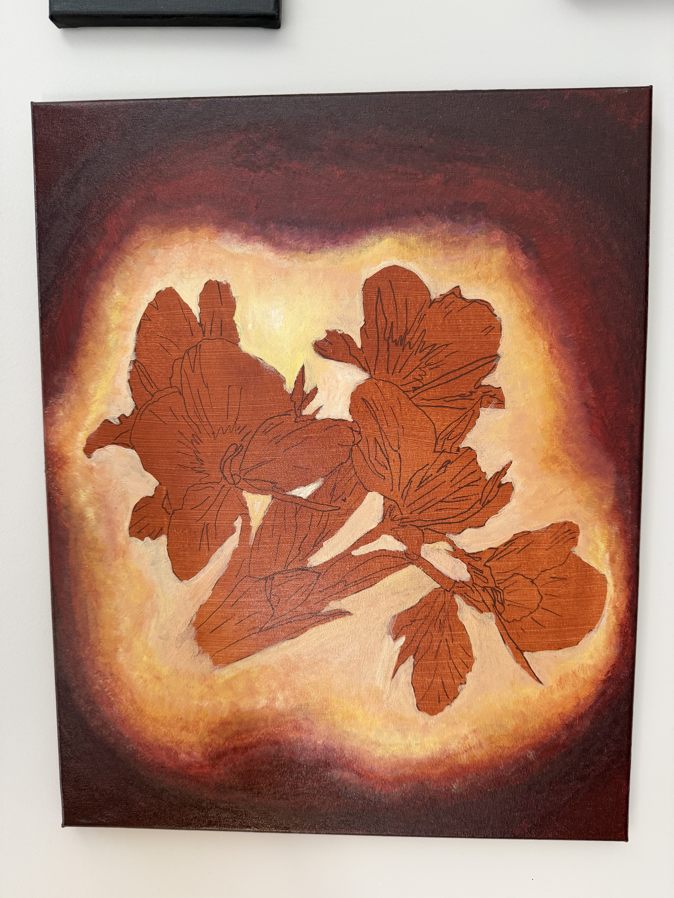
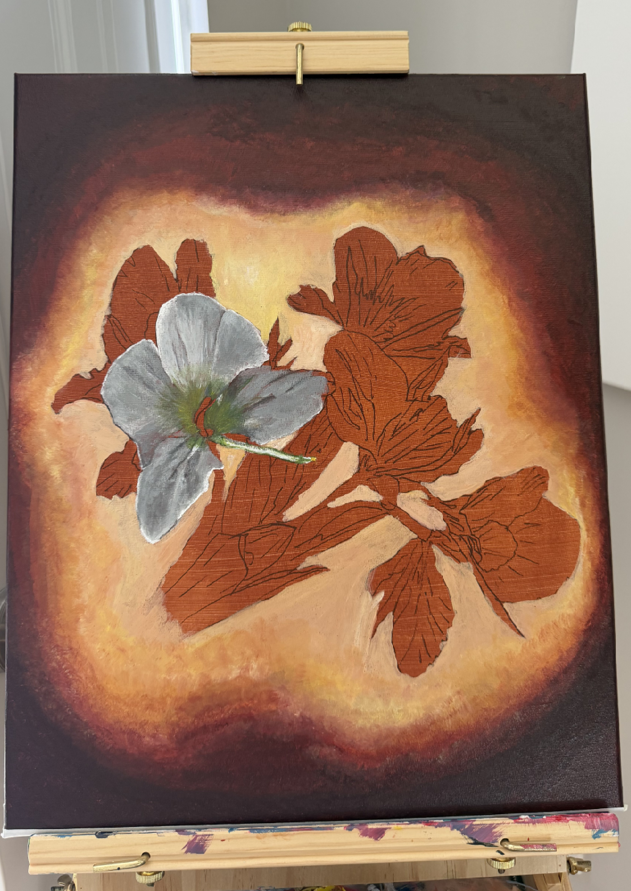
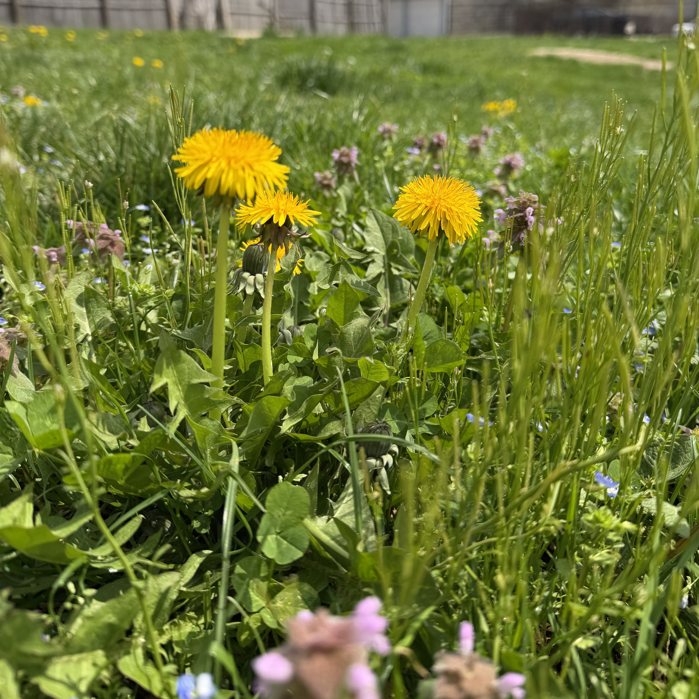
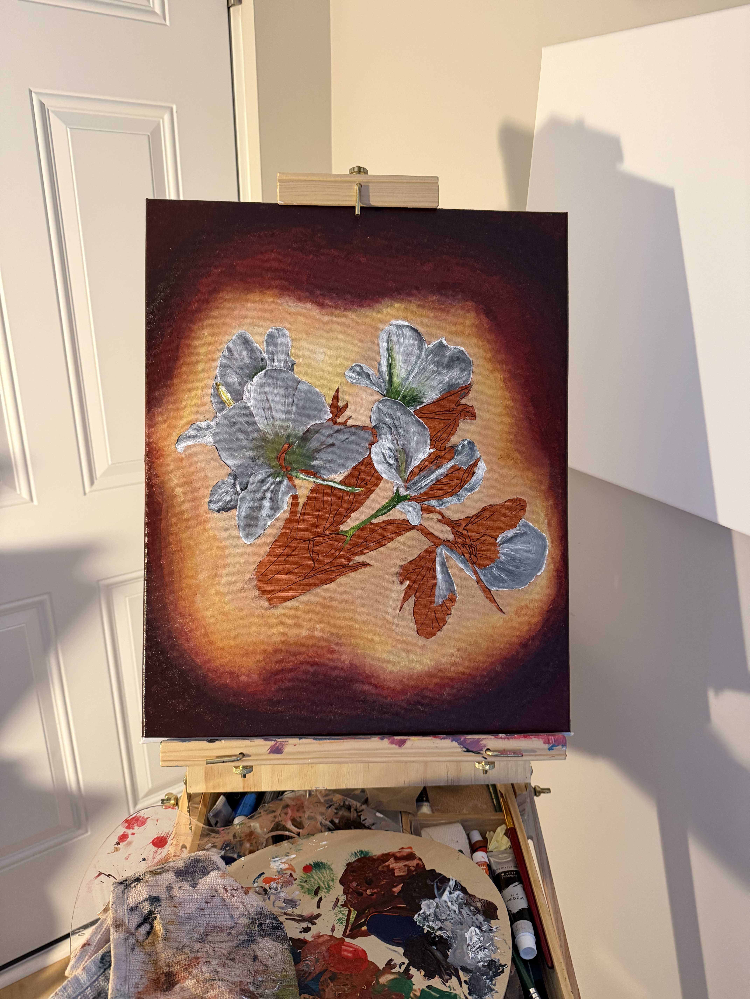
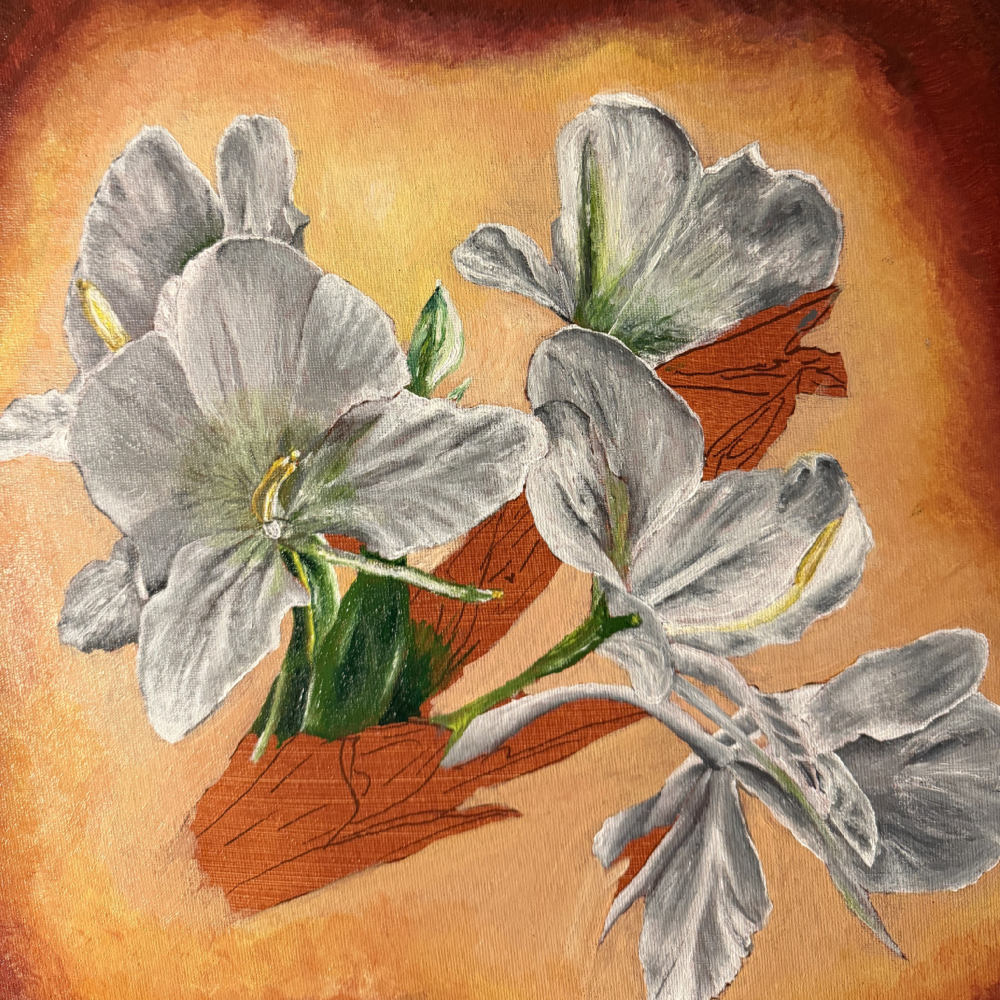

Studio Notes
Still Here

In my grandmother's garden in Cuba, the white ginger lily did not grow where beautiful things were supposed to grow. It appeared between damp stones, in poor soil, in corners nobody paid much attention to. It grew almost like a weed. I don't remember anyone stopping to admire it. Neither did I. It was simply there. And perhaps that was precisely the problem. We tend to imagine absence as something that begins with departure. Someone leaves. A place disappears behind us. An object is lost. A voice is heard for the last time. There is a before, and then there is an after. But I had not lost the white ginger lily. It was growing a few steps away from me. What I had lost, without knowing it, was the ability to notice it. Years later, distance changed something. I learned that the flower I had barely looked at was the national flower of Cuba. Suddenly, something that had occupied the margins of my childhood began to carry a weight I had never given it while standing beside it.

The flower had not changed. I had. And that realization made me wonder whether absence always requires something to disappear. Perhaps absence does not begin when something leaves. Perhaps it begins when we stop seeing it.

There was another flower I knew in exactly the opposite way. As a child in Cuba, dandelions were not part of the landscape I knew. I knew them through movies. I remember watching children hold those fragile white spheres in front of their faces and blow. For a moment the screen would fill with tiny seeds moving through the air. It was such a simple gesture, probably insignificant to the children doing it, but to me there was something almost magical about it. I wanted to know what that felt like.
Years later, I was living in the United States when the distance between that image and me disappeared. There were dandelions growing in my own yard. Not one. Many. The flower that had once belonged to movies was suddenly beneath my feet. And here, people cut them. Pull them from the ground. Treat them as weeds. I had encountered the same blindness from the opposite direction. The white ginger lily had been ordinary because it was mine. The dandelion had been extraordinary because it wasn't.

Eventually, both became ordinary. Neither flower had changed. The way I looked at them had. That is where Still Here began. And that contradiction opened another question. How much of what we see as beautiful, insignificant, exotic, ordinary, valuable, or disposable actually belongs to the thing itself? And how much have we learned to see that way?

Familiarity can make something invisible, but culture can do something similar. We inherit ways of looking. We are taught what deserves attention and what can remain in the background. A flower can become a national symbol. Another can become a weed. One can be protected in memory while the other is removed from a lawn. Yet both continue growing. Perhaps that is why the idea of Still Here became larger for me than either flower. It began to speak about people, places, gestures, traditions, objects, even parts of ourselves that remain present while gradually disappearing from our attention. We do not only stop seeing what is familiar. Sometimes, we learn not to see it.
And if that is true, then remembering is not simply looking backward. Sometimes remembering is an act of seeing again. Not because what we loved has returned. But because, perhaps, some of it never completely left. It was still here.